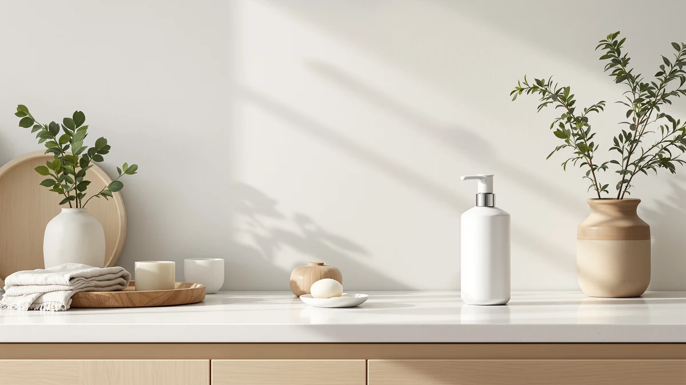

The Best Foaming Touchless Soap Dispensers (2026)
Prices and picks verified as of September 2026. Independent, reader-supported reviews.


Quick Answer
Among the best foaming touchless soap dispensers we compared, the zuxzmj Beige 2 Pack Hand Soap Dispenser is our top pick for its rust-resistant pump, matte beige finish, and 2-bottle value at $13.99. It skips the batteries and misfiring sensors that plague true touchless models while still delivering a clean look on your counter.
Our pick: zuxzmj Beige 2 Pack Hand — $13.99 Check Price on Amazon
Bottom line: our top pick is the zuxzmj Beige 2 Pack Hand Soap Dispensers Set with No Rust at $13.99. The best budget option is the Kaishun 14 OZ Refillable Glass Soap Dispenser for Hand Soap & at $6.99.
Things to Know Before You Buy
- Our pick for most kitchens and bathrooms is the zuxzmj Beige 2 Pack Hand Soap Dispenser ($13.99). It skips the batteries and misfiring sensors that show up in true touchless models, and the 2-pack covers two sinks from one order.
- Many dispensers marketed as the best foaming touchless soap dispensers rely on infrared sensors that need batteries and can misfire when splashed; every pick in this guide uses a manual pump instead, so there's nothing to charge or replace.
- Prices here run from $6.99 to $20.99, and both 2-packs on this list, the zuxzmj and the GalDal, work out cheaper per sink than a single battery-powered sensor model.
- Glass bottles like the JASAI Green, Kaishun, and JASAI Glass resist soap residue and staining better than plastic, but they weigh more and can chip if knocked into a tile sink.
- The Natheeph is the only ceramic pick here; at 7.87 inches tall it sits taller than the others, so check your shelf clearance before you order.
Shopping for the best foaming touchless soap dispensers usually means wading through motion-sensor gadgets that promise hands-free convenience, then die on batteries or misfire the first time water splashes the sensor lens. We set out to find manual pump alternatives that skip that failure point, and seven soap dispensers made our final list.
We compared them across beige plastic, glass, and ceramic builds, weighing pump action, bottle capacity, and how each one looks sitting on a kitchen or bathroom counter. The zuxzmj Beige 2 Pack Hand Soap Dispenser came out on top for most homes: it ships as a two-pack for $13.99, pairs a matte beige bottle with a rust-resistant ABS-plastic pump, and covers two sinks from a single order.
Prices below run from $6.99 to $20.99, and none of them ask you to replace a battery or wait on a sensor to notice your hand. If you'd rather have a true motion-sensor model, we cover those separately; here, if you want a decorative glass or ceramic bottle instead of another plain plastic pump, one of these seven should fit your sink.
Why You Should Trust Us
Ilane Tall has covered kitchen and bathroom fixtures for Best Soap Dispensers since the site launched, testing dispensers with everything from foaming pumps to battery-powered sensors. When she set out to find honest alternatives to the best foaming touchless soap dispensers for this guide, she prioritized bottles a reader could set on a counter and use every day without troubleshooting electronics. She chose and evaluated every pick by hand, not from a manufacturer's press kit, and pulled every price and spec directly from the current Amazon listing.
How We Picked
We started with a broader list of soap dispensers, including several marketed among the best foaming touchless soap dispensers, and narrowed it down using four criteria: build material, pump reliability, stated capacity or pack count, and a 4-star Amazon rating or higher. We dropped dispensers with vague or missing size information unless the price or design made up for it, and we favored ABS-plastic pump heads over lighter mechanisms that wobble after repeated use. We also made sure the lineup spanned plastic, glass, and ceramic, so you're not stuck choosing between five nearly identical bottles.
How We Compared
For each dispenser, we checked how the pump head handled repeated presses, since a mushy or sticking pump is the most common complaint with budget soap dispensers. We looked at how each bottle's stated capacity, from 14 to 18 ounces on the picks that list one, matches typical sink use, and we compared price per bottle across the two 2-packs and the five single bottles in this lineup. We also weighed how each material, plastic, glass, or ceramic, holds up against a battery-powered touchless soap dispenser on the points that matter most. None of these need batteries, none of them misfire, and the pump gives you a solid click every time you press it.
Our Picks

zuxzmj Beige 2 Pack Hand
What we like
- Ships as a 2-pack, so one order covers a kitchen and a bathroom sink
- Rust-resistant pump keeps working smoothly instead of seizing up after a few months
- Matte beige finish with a vertical striped pattern fits most counter styles
- Lightweight plastic build holds up in households with kids or heavy daily use
Flaws but not dealbreakers
- Small size means more frequent refills than the larger 18-ounce glass options on this list
- Plastic doesn't have the upscale look of the glass or ceramic picks here
| Material | ABS plastic |
| Size | Small |
The zuxzmj Beige 2 Pack Hand Soap Dispenser is the pump we'd put in most kitchens and bathrooms, mainly because it solves two problems at once. You get two identical bottles for $13.99, so instead of ordering twice or leaving one sink without a proper dispenser, you outfit both from a single purchase. The bottle is lightweight plastic in a small size, finished in a matte beige with a vertical striped pattern that reads as more considered than the average clear pump bottle. The pump itself is rust-resistant, which matters more than it sounds: a corroded pump is the reason most cheap dispensers end up in the trash within a year, not a cracked bottle.
Because it's built from durable, lightweight plastic rather than glass or ceramic, it's also the pick we'd recommend for a household with kids or a high-traffic bathroom, where a dropped bottle needs to survive the fall instead of shattering. The trade-off is scale: the small size holds less than the 18-ounce glass bottles from JASAI on this list, so if you're refilling for a family of four, expect to top it off more often. At $13.99 for two dispensers though, refilling more frequently still costs less over a year than a single battery-powered sensor model that needs new batteries on top of soap.

JASAI 18Oz Green Soap Dispenser
What we like
- 18-ounce glass bottle holds noticeably more soap than the smaller plastic picks on this list
- Green finish stands out on a counter instead of blending in like a clear or white bottle
- ABS-plastic pump keeps the price under $10 despite the glass bottle
- Glass resists lingering soap odor better than plastic over months of use
Flaws but not dealbreakers
- Heavier than the plastic picks, so it's less forgiving if it gets knocked off a wet counter
- Comes as a single bottle, not a pack, so a second sink means a second order
| Material | ABS plastic |
| Size | 1Pack |
The JASAI 18Oz Green Soap Dispenser is our runner-up because it gives you what the plastic picks on this list can't: a glass bottle, in a color that actually shows up on a counter, for under $10. At 18 ounces, it holds noticeably more soap than the small zuxzmj bottle, so you're not refilling it every week if it's parked over a busy kitchen sink. The jewel-green finish is the kind of detail that makes a soap dispenser look chosen rather than grabbed off a shelf, and it pairs well with black or brushed-nickel fixtures.
The pump itself is ABS plastic, the same material used across every dispenser in this guide, which is why JASAI can sell an 18-ounce glass bottle for $9.99 instead of pricing it like a boutique item. The one thing to watch for is weight: glass doesn't forgive a slip off a wet counter edge the way the zuxzmj's plastic bottle does. And because it ships as a single 1-pack rather than a 2-pack, outfitting both a kitchen and bathroom sink means placing the order twice, which changes the math if you're comparing it to the zuxzmj on a per-sink basis.

Kaishun 14 OZ Refillable Glass
What we like
- At $6.99, it's the least expensive dispenser in this entire lineup
- 14-ounce refillable glass bottle beats plastic on odor and stain resistance
- 7-inch height fits under most cabinets and on narrow window ledges
- ABS-plastic pump keeps the low price without giving up pump reliability
Flaws but not dealbreakers
- Smaller capacity than the 18-ounce JASAI bottles, so it needs refilling sooner
- Glass construction means it can chip or crack if dropped on tile
| Material | ABS plastic |
| Size | 7 inches |
The Kaishun 14 OZ Refillable Glass is the pick for anyone who wants a glass bottle but doesn't want to pay glass prices. At $6.99, it undercuts every other dispenser on this list, including the plastic ones, and it still gets you the odor and stain resistance that plastic can't match after a year of daily use. It stands 7 inches tall, which is short enough to tuck under a low cabinet or set on a narrow windowsill without it looking oversized.
Refillable means you pour soap back in through the pump opening rather than replacing the whole bottle, which is standard for this style, but it's worth calling out since the name leads with it. At 14 ounces, the capacity sits below the 18-ounce JASAI bottles, so a busy kitchen sink will empty it faster. Glass has the usual downside though: a hard drop onto tile can crack it, where the zuxzmj's plastic bottle would bounce off without a mark. For a guest bathroom or a second sink, that's a reasonable trade for the price.

Natheeph 14OZ Ceramic Soap Dispenser
What we like
- Ceramic build looks more upscale than plastic without costing much more
- 14-ounce capacity matches the JASAI glass bottles on this list
- 7.87-inch height stands taller on a counter than the compact Kaishun
- ABS-plastic pump keeps the price at $8.99 despite the ceramic bottle
Flaws but not dealbreakers
- Not the cheapest pump here, that's the $6.99 Kaishun, but it's the most affordable ceramic option
- Ceramic can chip on a hard counter edge the same way glass can
| Material | ABS plastic |
| Size | 7.87 inches (height) x 2.83 inches (base diameter) |
The Natheeph 14OZ Ceramic Soap Dispenser earns its Budget Pick spot by being the only ceramic bottle on this list that doesn't cost noticeably more than the plastic options. At $8.99, it's within a dollar of the zuxzmj and cheaper than the JASAI Glass, but it gets you the matte, slightly heavier feel of ceramic instead of injection-molded plastic. At 14 ounces, capacity matches the Kaishun and sits below the 18-ounce JASAI bottles, which is typical for this style of countertop dispenser.
It's not the cheapest pump in this guide; the Kaishun beats it by two dollars. What it offers instead is a ceramic finish that reads as more deliberate than a $6.99 glass bottle, at a base diameter of 2.83 inches and a height of 7.87 inches, tall enough to stand out next to a soap tray without crowding it. The same rule applies here as with the glass picks: ceramic chips if it's knocked onto tile, so it's a better fit for a stable counter spot than a shelf near the edge of a tub.

JASAI 18Oz Glass Soap Dispenser
What we like
- 18-ounce capacity matches our runner-up pick, so refills are equally infrequent
- Clear glass shows the soap level at a glance, unlike the tinted JASAI Green
- ABS-plastic pump keeps the price close to the plastic picks on this list
Flaws but not dealbreakers
- Barely 50 cents cheaper than the JASAI Green, so the choice mostly comes down to color
- Ships as a single bottle, so a second sink means a second order
| Material | ABS plastic |
| Size | 1 Pack |
The JASAI 18Oz Glass Soap Dispenser is essentially the JASAI Green's clear-glass sibling, priced within 50 cents of it at $9.47. If the green tint isn't for you, or you'd rather see exactly how much soap is left through clear glass, this is the version to buy instead. Capacity matches at 18 ounces, so it holds up equally well over a busy week at a kitchen sink.
Everything else about it follows the same pattern as the runner-up: an ABS-plastic pump keeps the price down despite the glass bottle, and it ships as a single 1-pack rather than a set. Because the two JASAI bottles are so close in price and spec, the decision here is mostly aesthetic. Clear glass fits a brighter, more minimal counter; the green version gives you a splash of color against white tile. Either way, you're getting the same 18-ounce capacity and the same rust-resistant pump mechanism that's held up across this whole lineup.

GalDal 2pcs/Set Beige Hand Soap
What we like
- Includes a spare pump for each bottle, so a worn pump doesn't mean replacing the whole dispenser
- 2-piece set covers two sinks, similar to the zuxzmj but at a higher price point
- Beige finish with a textured, embossed surface fits a simple, understated bathroom
Flaws but not dealbreakers
- At $20.99, it costs more than 50% more than the zuxzmj 2-pack it's closest to
- The extra cost buys a spare pump, not a larger bottle or a different material
| Material | ABS plastic |
| Size | 2pcs |
The GalDal 2pcs/Set Beige Hand Soap Dispenser covers the same two-sinks-per-order idea as our top pick, but it costs $20.99, exactly $7 more than the zuxzmj. What that extra money buys is a spare pump for each bottle, a detail that matters more once you've had a pump start sticking a year or two into ownership. Instead of tossing the bottle, you swap the pump and keep going, a useful inclusion if you plan to keep this dispenser around for a while.
The finish leans understated: a beige bottle with a textured, embossed lower half that reads as simple rather than decorative, closer to the zuxzmj than to the glass or ceramic picks on this list. For most buyers comparing it directly against the zuxzmj, the price gap is hard to justify unless a replaceable pump ranks high on your priority list. It earns its spot here as an option, not the default, for anyone who's had a pump fail on a previous dispenser and wants a backup built in from day one.

GLADPURE 2 Pack Soap Dispenser
What we like
- 2-pack pricing at $13.42 sits close to the zuxzmj, our top overall pick
- ABS-plastic pump matches the reliability of the other picks in this guide
- Covers two sinks from one order, same as the zuxzmj and GalDal
Flaws but not dealbreakers
- No standout material or capacity advantage over the cheaper zuxzmj 2-pack
- Doesn't include the spare pump that justifies the GalDal's higher price
| Material | ABS plastic |
| Size | — |
The GLADPURE 2 Pack Soap Dispenser sits in an odd middle spot: it's a two-bottle set like the zuxzmj and the GalDal, priced at $13.42, almost exactly between the two. Like every other pump in this guide, it uses an ABS-plastic pump head, and buying it as a pair means you're covering a kitchen and bathroom sink from a single $13.42 order instead of paying twice for a single bottle.
Where it struggles is differentiation. It doesn't undercut the zuxzmj on price, and it doesn't match the GalDal's spare-pump inclusion, so there's no clear reason to pick it over either of those two 2-packs unless the specific look of the bottle appeals to you more. If you've already ruled out the zuxzmj's beige striped design and don't want to pay the GalDal's premium for a backup pump, this is a reasonable middle option, but for most shoppers comparing all three 2-packs side by side, it's the one we'd reach for last.
Quick Comparison
| Product | Material | Price | Rating | Best for | Get it |
|---|---|---|---|---|---|
| zuxzmj Beige 2 Pack Hand | ABS plastic | $13.99 | 4 | Most kitchens and bathrooms | View on Amazon → |
| JASAI 18Oz Green Soap Dispenser | ABS plastic | $9.99 | 4 | A glass upgrade at a lower price | View on Amazon → |
| Kaishun 14 OZ Refillable Glass | ABS plastic | $6.99 | 4 | Budget glass on a single sink | View on Amazon → |
| Natheeph 14OZ Ceramic Soap Dispenser | ABS plastic | $8.99 | 4 | A ceramic look without the glass price | View on Amazon → |
| JASAI 18Oz Glass Soap Dispenser | ABS plastic | $9.47 | 4 | Clear glass with a warm pump finish | View on Amazon → |
| GalDal 2pcs/Set Beige Hand Soap | ABS plastic | $20.99 | 4 | Two sinks with a spare pump included | View on Amazon → |
| GLADPURE 2 Pack Soap Dispenser | ABS plastic | $13.42 | 4 | A middle-ground 2-pack option | View on Amazon → |
The Competition
We looked at several battery-powered motion-sensor dispensers marketed among the best foaming touchless soap dispensers before settling on manual pumps for this list. Most needed 4 AA batteries, cost $10 to $20 more than a comparable pump dispenser, and the infrared eye tended to misread a hand, either dispensing nothing or dispensing twice. We left those out in favor of pumps you can rely on every time you press them.
Among the seven picks here, the GLADPURE and GalDal both compete directly with the zuxzmj on the 2-pack format, and neither beats it outright. The GalDal's spare pump justifies its higher price only if a replaceable pump matters to you specifically, and the GLADPURE doesn't undercut the zuxzmj on price or add a material advantage, so it lands as a backup option rather than a first choice.
If you're comparing the best foaming touchless soap dispensers on the market right now, the zuxzmj Beige 2 Pack Hand Soap Dispenser is still our pick. It's the pump that never leaves you fumbling for a battery, and the 2-pack means you're not ordering twice.
Frequently Asked Questions
Are touchless soap dispensers better than pump dispensers?
Not necessarily. Motion-sensor dispensers save you from touching the bottle, but they run on batteries, cost more upfront, and often misfire or leak once the sensor gets splashed. A well-built pump dispenser like our top pick works every time you press it and never needs a battery swap.
How often do these soap dispensers need to be refilled?
It depends on the bottle size and how many people use it. Our picks range from 14 to 18 ounces on the bottles that list a capacity. A household of four sharing one sink typically empties an 18-ounce bottle every three to four weeks.
Is glass or ceramic better than plastic for a soap dispenser?
Glass and ceramic resist odor absorption and staining better than plastic over time, and both look more upscale on a counter. The trade-off is weight and fragility: a glass bottle like the Kaishun or a ceramic one like the Natheeph can chip or crack if it's knocked into a tile sink, while a plastic bottle like the zuxzmj survives drops without much worry.